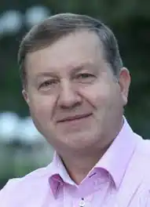

Микола Семенович Гриценко народився 9 травня 1962 року в с. Тимченки, Сумської області. Український поет, прозаїк, журналіст, громадський діяч. Президент благодійної організації "Фонд сприяння ініціативам газети "День". Член Національної спілки журналістів України, перший заступник голови Національної спілки письменників України (з березня 2024 року). Заслужений діяч мистецтв України, лауреат літературних премій і конкурсів.
Після закінчення Козелянської середньої школи вступив на факультет журналістики Київського державного університету ім. Т. Шевченка, де отримав фах телевізійного журналіста.
Служив у лавах Радянської Армії. У 1986 році у складі військових підрозділів брав участь у ліквідації наслідків аварії на Чорнобильській АЕС. Після демобілізації почав працювати у Сумському облтелерадіокомітеті. При створенні головної редакції телебачення в 1987 році, став першим головним редактором телебачення Сумського облтелерадіокомітету. На сумському телебаченні був автором і ведучим багатьох циклів популярних телепрограм з 1987 по 1995 рік. В 1995 році був призначений представником Національної ради України з питань телебачення і радіомовлення в Сумській області. Брав безпосередню участь в розробці та реалізації концепції розвитку телерадіомовного простору Сумської області. З 2000 року працює в центральному апараті Національної ради України з питань телебачення і радіомовлення, є керівником прес-служби Національної ради, головним редактором журналу "Вісник Національної ради України з питань телебачення і радіомовлення". З 2012 року — президент благодійної організації "Фонд сприяння ініціативам газети "День". Микола Гриценко є автором низки книг прози, поезії і публіцистики: "Довго кувати зозулі" (1993), "Білий налив" (1994), "Самар" (1998), "Книжка" (2000), "Голоси на вітрі" (2004), "Живи добром" (2009), "Повернення дощу" (2010), "САМАР-І-Я" (2012) "На зелених іконах дерев" (2014), збірка любовної поезії "Лови/Love" (2018). Він є автором тексту гімну міста Сум (композитор і виконавець Валерій Козупиця), низки популярних пісень, що стали лауреатами пісенних Всеукраїнських фестивалів "Пісня року": "Сумська мелодія", "Дві долі", "Юності пора" та інших.